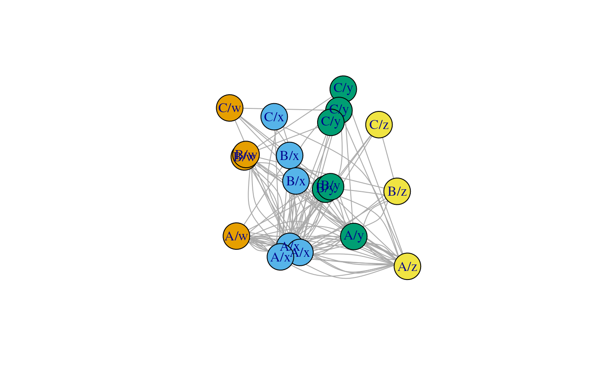
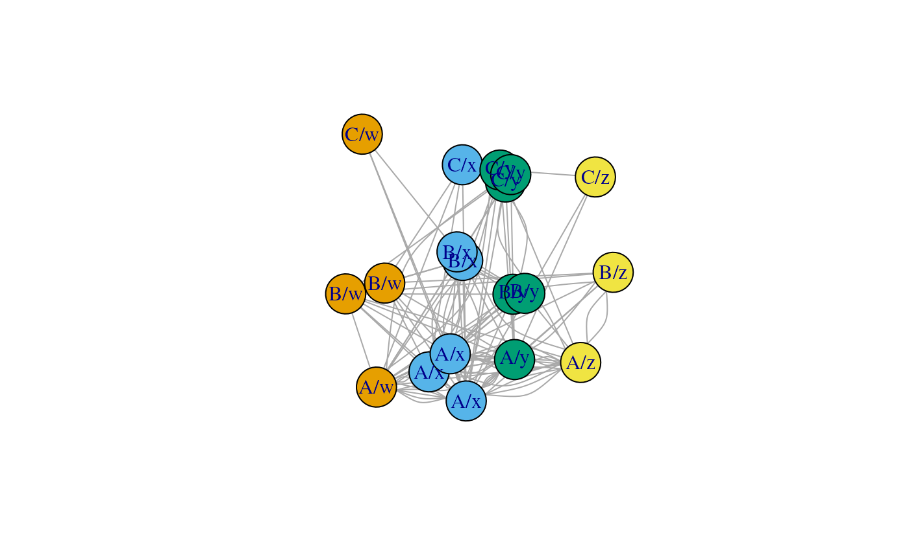

library(diseasy)
#> Loading required package: diseasystore
#>
#> Attaching package: 'diseasy'
#> The following object is masked from 'package:diseasystore':
#>
#> diseasyoptionOverview
The DiseasyPopulation module is responsible for defining
the model population and interfacing with the models.
Presently, DiseasyPopulation combines
DiseasyRegions and DiseasyActivity to
configure a model population stratified by age and geographical region.
Where DiseasyRegions defines the scope and
possible stratifications of the model population,
DiseasyPopulation manages the stratification itself.
Similarly, DiseasyActivity defines the age-specific
interactions between age groups as well as age-specific societal
restrictions over time, while DiseasyPopulation aggregates
these effects into user stratified age groups. Combined, this forms a
model population stratified both spatially and by age groups.
Defining the population of interest
The first step of defining the model population is to define a population of interest.
For DiseasyPopulation, this is done via
DiseasyRegions1 which handles demography data (see
vignette(diseasy-regions) for more details).
regions <- DiseasyRegionsNuts$new(
demography = demography_nordic_nuts3, # Use demography data from EUROSTAT
adjacency = adjacency_meta_nordic_nuts3, # Use adjacency data from Meta
area = "DK" # Restrict population of interest to Danish population
)
regions
#> # DiseasyRegions #############################################
#> Area: DK
#> Total population: 5,992,734
#> Theta matrix: Max eigenvalue 90130217Once the scope of the population has been defined in
DiseasyRegions, this can be passed to
DiseasyPopulation to handle the remaining configuration of
the model population.
population <- DiseasyPopulation$new(regions = regions)
population
#> # DiseasyPopulation ##########################################
#> Stratifications:
#> Age: No age stratification has been configured
#> Space: No spatial stratification has been configuredDefining the age-specific interactions
If the model population should be stratified by age, the next step is
to configure the age-specific interactions between age groups (contact
matrices). In diseasy, this is done via the
DiseasyActivity2.
activity <- DiseasyActivity$new(
contact_basis = contact_basis_nordic %.% DK
)
activity
#> # DiseasyActivity ############################################
#> Scenario: Activity scenario not yet set
#> Contact basis: Contact matrices for Denmark from the `contactdata` package and population data for
#> Denmark from the US Census Bureau.… and, once a basis of contact matrices has defined, the
DiseasyActivity can be passed to
DiseasyPopulation.
population$load_module(activity)
population
#> # DiseasyPopulation ##########################################
#> Stratifications:
#> Age: No age stratification has been configured
#> Space: No spatial stratification has been configuredStratifying to form the model population
With the population basis defined via DiseasyRegions and
DiseasyActivity, the model population can now be stratified
at various resolutions to before being passed to the models.
To stratify by age, we use the
$stratify_age() method:
population$stratify_age(age_cuts_lower = c(0, 20, 40, 60, 80))
# and we can inspect the defined demographic groups
population$model_population
#> # A tibble: 5 × 4
#> age_group region population proportion
#> <chr> <chr> <dbl> <dbl>
#> 1 00-19 All 1283332 0.214
#> 2 20-39 All 1568839 0.262
#> 3 40-59 All 1510193 0.252
#> 4 60-79 All 1291033 0.215
#> 5 80+ All 339337 0.0566To stratify by region, we use the
$stratify_regions() method:
population$stratify_regions(regional_stratification = "NUTS 2")
# .. and we can inspect the updated demographic groups
population$model_population
#> # A tibble: 25 × 4
#> age_group region population proportion
#> <chr> <chr> <dbl> <dbl>
#> 1 00-19 DK01 410266 0.0685
#> 2 00-19 DK02 180030 0.0300
#> 3 00-19 DK03 266347 0.0444
#> 4 00-19 DK04 303358 0.0506
#> 5 00-19 DK05 123331 0.0206
#> # ℹ 20 more rowsPopulations outside the Nordics
To keep the installation size of diseasy light, we only
bundle population data for the Nordic countries.
To generate data for other regions, see the data generating
functions: generate_demography(),
generate_contact_basis(), etc.
Notes: Regional aggregation of contact matrices
The source data for the contact matrices we use in
diseasy is typically collections of survey data where
participants have been instructed to count contacts with other
individuals along with the approximate age of these individuals. These
survey data are then corrected for differences in demography of the
participants and the group they are meant to represent (e.g. a given
country) to form a “full” contact matrix for the target population.
To gain some intuition on the how these contact matrices can be interpreted and manipulated we will begin by considering some toy-examples with a toy population of age groups (“A”, “B”, “C”) and spatial regions (“x”, “y”, “z”, “w”).
population <- tibble::tibble(
"group" = c(
rep("A/x", 3), rep("B/x", 2), rep("C/x", 1),
rep("A/y", 1), rep("B/y", 2), rep("C/y", 3),
rep("A/z", 1), rep("B/z", 1), rep("C/z", 1),
rep("A/w", 1), rep("B/w", 2), rep("C/w", 1)
)
) |> tidyr::separate_wider_delim(
cols = "group", delim = "/", names = c("age_group", "region"), cols_remove = FALSE
)
age_groups <- unique(population$age_group)
regions <- unique(population$region)
# Store as factors
population <- population |>
dplyr::mutate(
"age_group" = factor(.data$age_group, levels = age_groups),
"region" = factor(.data$region, levels = regions),
"group" = factor(.data$group, levels = unique(.data$group))
)
table(population$group)
#>
#> A/x B/x C/x A/y B/y C/y A/z B/z C/z A/w B/w C/w
#> 3 2 1 1 2 3 1 1 1 1 2 1Assuming age-specific total contacts (“T” domain - see
vignette("diseasy-activity") for more details):
N_age <- stats::xtabs(~ age_group, data = population)
t_matrix <- round(
outer(
1.5 / seq_along(age_groups),
1.5 / seq_along(age_groups)
)^1.25 * N_age %*% t(N_age)
)
print(t_matrix)
#> age_group
#> age_group A B C
#> A 99 49 25
#> B 49 24 12
#> C 25 12 6… and age-specific mean contact rates (“M” domain) of:
m_matrix <- t_matrix / outer(N_age, rep(1, length(N_age)))
print(round(m_matrix, digits = 2))
#> age_group
#> age_group A B C
#> A 16.50 8.17 4.17
#> B 7.00 3.43 1.71
#> C 4.17 2.00 1.00.. and corresponding per-capita contact rates (“C” domain) of:
c_matrix <- t_matrix / outer(N_age, N_age)
print(round(c_matrix, digits = 2))
#> age_group
#> age_group A B C
#> A 2.75 1.17 0.69
#> B 1.17 0.49 0.29
#> C 0.69 0.29 0.17A well-mixed example
Consider the well-mixed case where a population of individuals across different age groups and spatial locations are equally likely to be connected.
We can draw a realisation of such a network from our contact matricesSee implementation
# Convert T-matrix to long-form data.frame
one_way_links <- tidyr::expand_grid(
i_age_group = age_groups,
j_age_group = age_groups
) |>
dplyr::mutate(
"n_contacts" = as.vector(t_matrix)
) |>
tidyr::uncount(.data$n_contacts) |>
dplyr::select(!"n_contacts")
# Randomly draw i indices (from nodes)
one_way_links <- one_way_links |>
dplyr::group_by(.data$i_age_group) |>
dplyr::group_modify(
~ .x |>
dplyr::mutate(
"i" = sample(
x = which(
stringr::str_starts(population$group, .y$i_age_group)
),
size = dplyr::n(),
replace = TRUE
)
)
)
# Randomly draw j indices (to nodes)
one_way_links <- one_way_links |>
dplyr::group_by(.data$i, .data$j_age_group) |>
dplyr::group_modify(
~ .x |>
dplyr::mutate(
"j" = sample(
x = which(
stringr::str_starts(population$group, .y$j_age_group) &
seq_along(population$group) != .y$i
),
size = dplyr::n(),
replace = TRUE
)
)
)
# Finalise
one_way_links <- one_way_links |>
dplyr::mutate( # Make lower
"i_u" = pmax(.data$i, .data$j),
"j_u" = pmin(.data$i, .data$j)
) |>
dplyr::group_by(.data$i_u, .data$j_u) |>
dplyr::summarise("n" = dplyr::n(), .groups = "drop") # Count connections
# Convert to adjacency matrix with 2-way interactions
adjacency_sw <- as.matrix(
Matrix::sparseMatrix(
i = one_way_links$i_u,
j = one_way_links$j_u,
x = one_way_links$n,
dims = c(nrow(population), nrow(population)),
dimnames = list(population$group, population$group)
)
)
# Make symmetric
adjacency_sw <- (adjacency_sw + t(adjacency_sw)) / 2
print_truncated(adjacency_sw)
#> A/x A/x A/x B/w B/w C/w
#> A/x 0.0 2.0 3.0 ... 0.0 3.0 1.0
#> A/x 2.0 0.0 4.0 ... 1.0 0.0 0.0
#> A/x 3.0 4.0 0.0 ... 0.5 2.5 0.5
#> ... ... ... ... ... ... ...
#> B/w 0.0 1.0 0.5 ... 0.0 2.5 0.0
#> B/w 3.0 0.0 2.5 ... 2.5 0.0 0.5
#> C/w 1.0 0.0 0.5 ... 0.0 0.5 0.0
adjacency_graph(adjacency_sw)
From this full adjacency graph, we can project the contacts (“T” domain) into contact matrices in different stratifications.
Number of contacts stratified by age group and region (with population size in parentheses):
T_age_region <- aggregate_contacts(
adjacency = adjacency_sw,
population = population$group,
groups = population$group # No aggregation
)
print_truncated(T_age_region)
#> A/x (3) B/x (2) C/x (1) A/w (1) B/w (2) C/w (1)
#> A/x (3) 18.0 11.0 3.5 ... 12.0 7.0 1.5
#> B/x (2) 11.0 2.0 0.0 ... 1.5 3.0 0.0
#> C/x (1) 3.5 0.0 0.0 ... 0.5 0.5 0.0
#> ... ... ... ... ... ... ...
#> A/w (1) 12.0 1.5 0.5 ... 0.0 0.5 0.0
#> B/w (2) 7.0 3.0 0.5 ... 0.5 5.0 0.5
#> C/w (1) 1.5 0.0 0.0 ... 0.0 0.5 0.0
cat("Total contacts: ", sum(T_age_region))
#> Total contacts: 301Stratify only by region:
T_region <- aggregate_contacts(
adjacency = adjacency_sw,
population = population$group,
groups = population$region
)
print(T_region)
#> x (6) y (6) z (3) w (4)
#> x (6) 49.0 31.5 17.5 26.0
#> y (6) 31.5 10.0 15.0 15.0
#> z (3) 17.5 15.0 4.0 10.5
#> w (4) 26.0 15.0 10.5 7.0
cat("Total contacts: ", sum(T_region))
#> Total contacts: 301Stratify only by age group (and compare with input used to generate the adjacency graph)
T_age <- aggregate_contacts(
adjacency = adjacency_sw,
population = population$group,
groups = population$age_group
)
print(T_age)
#> A (6) B (7) C (6)
#> A (6) 99 49 25
#> B (7) 49 24 12
#> C (6) 25 12 6
cat("Total contacts: ", sum(T_age))
#> Total contacts: 301
# Reference
print(t_matrix)
#> age_group
#> age_group A B C
#> A 99 49 25
#> B 49 24 12
#> C 25 12 6
cat("Total contacts: ", sum(t_matrix))
#> Total contacts: 301Let’s see if we can achieve these same contacts without explicitly generating the network.
First, the mixing matrix for well-mixed scenario is:
mixing_sw <- matrix(
data = 1,
nrow = length(regions),
ncol = length(regions),
dimnames = list(regions, regions)
)
print(mixing_sw)
#> x y z w
#> x 1 1 1 1
#> y 1 1 1 1
#> z 1 1 1 1
#> w 1 1 1 1Notice that we now have a population stratified by age in age groups and , and a regional mixing matrix connecting regions and . The population is therefore currently identified by the simultaneous indices (), which we combine to form a linear “demography group” index connecting individuals from demographic groups and . So that and enumerate all combinations of age and region ().
The models population is expressed in this linear index and, therefore, we aim to combine the regional mixing and age-specific matrices into a single representation in the linear demography group indices. A “full” rather than “marginal” contact matrix.
We can compute the “full” per-capita contact matrix, , from the age-specific contact matrix, , the regional mixing matrix, , and the population vector, with indices : via the elementwise relation:
Where is a age-group normalisation (see below) and is a normalised mixing matrix between regions:
with being the population fraction:
The normalisation is the population-pair-weighted average of the entries of .
The normalized entry is a relative contact multiplier: For example,
means that contacts between regions and are multiplied by 1.4, relative to the average mixing effect.
Note that the normalization preserves the population-pair-weighted regional mixing intensity. Consequently, the total number of contacts is invariant only when regional age compositions are identical.
This is where the additional normalisation constants comes in.
We first define mixing-weighted population-pair volume as:
That is, the number of potential population pairs between age groups and when accounting for the mixing between regions.
The additional normalisation then becomes:
which preserves the age-specific contact volume when aggregating across the regions.
Let’s see that computation in practice:
N_age_region <- stats::xtabs(~ age_group + region, data = population)
print(N_age_region)
#> region
#> age_group x y z w
#> A 3 1 1 1
#> B 2 2 1 2
#> C 1 3 1 1
N_region <- stats::xtabs(~ region, data = population)
n_region <- N_region / sum(N_region)
print(n_region)
#> region
#> x y z w
#> 0.3157895 0.3157895 0.1578947 0.2105263
theta <- mixing_sw
theta_norm <- theta / drop(t(n_region) %*% theta %*% n_region)
k <- N_age %*% t(N_age) / (N_age_region %*% theta_norm %*% t(N_age_region))
c_matrix_full_sw <- kronecker(theta_norm, c_matrix * k)
dimnames(c_matrix_full_sw) <- list(
unique(population$group),
unique(population$group)
)
print_truncated(round(c_matrix_full_sw, digits = 1))
#> A/x B/x C/x A/w B/w C/w
#> A/x 2.8 1.2 0.7 ... 2.8 1.2 0.7
#> B/x 1.2 0.5 0.3 ... 1.2 0.5 0.3
#> C/x 0.7 0.3 0.2 ... 0.7 0.3 0.2
#> ... ... ... ... ... ... ...
#> A/w 2.8 1.2 0.7 ... 2.8 1.2 0.7
#> B/w 1.2 0.5 0.3 ... 1.2 0.5 0.3
#> C/w 0.7 0.3 0.2 ... 0.7 0.3 0.2The per-capita contact matrix can then be cast to the number of contacts (“T” domain).
N <- as.matrix(table(population$group))
t_matrix_full_sw <- c_matrix_full_sw * tcrossprod(N)
print_truncated(round(t_matrix_full_sw, digits = 1))
#> A/x B/x C/x A/w B/w C/w
#> A/x 24.8 7.0 2.1 ... 8.2 7.0 2.1
#> B/x 7.0 2.0 0.6 ... 2.3 2.0 0.6
#> C/x 2.1 0.6 0.2 ... 0.7 0.6 0.2
#> ... ... ... ... ... ... ...
#> A/w 8.2 2.3 0.7 ... 2.8 2.3 0.7
#> B/w 7.0 2.0 0.6 ... 2.3 2.0 0.6
#> C/w 2.1 0.6 0.2 ... 0.7 0.6 0.2Finally, we can aggregate the raw contact matrix in the same groups as the original reference (i.e. age groups only) and compare with that reference.
T_age_indirect <- aggregate_contacts(
t_matrix_full_sw,
population = unique(population$group),
groups = unique(population$age_group)
)
print_truncated(round(T_age_indirect, digits = 1))
#> A (1) B (1) C (1)
#> A (1) 99 49 25
#> B (1) 49 24 12
#> C (1) 25 12 6
cat("Total contacts: ", sum(T_age_indirect))
#> Total contacts: 301
# Reference
print(t_matrix)
#> age_group
#> age_group A B C
#> A 99 49 25
#> B 49 24 12
#> C 25 12 6
cat("Total contacts: ", sum(t_matrix))
#> Total contacts: 301A silo example
Consider a complementary network where a population of individuals across different age groups and spatial locations are well-mixed only within their spatial region (an extremely “siloed” network).
We can draw a realisation of such a network from our contact matricesSee implementation
# Convert T matrix to long-form data.frame
one_way_links <- tidyr::expand_grid(
i_age_group = age_groups,
j_age_group = age_groups
) |>
dplyr::mutate(
"n_contacts" = as.vector(t_matrix)
) |>
tidyr::uncount(.data$n_contacts) |>
dplyr::select(!"n_contacts")
# Randomly draw i indices (from nodes)
# verify they connect to j nodes in the region
# -- else re-draw from accepted samples
one_way_links <- one_way_links |>
dplyr::group_by(.data$i_age_group) |>
dplyr::group_modify(
~ {
i_sampled <- .x |>
dplyr::mutate(
"i_age_group" = .y$i_age_group,
"i" = sample(
x = which(
stringr::str_detect(population$group, .y$i_age_group)
),
size = dplyr::n(),
replace = TRUE
),
"i_lab" = population$group[.data$i],
"i_region" = stringr::str_extract(.data$i_lab, "[a-z]")
)
# Determine reachable connections
i_sampled <- i_sampled |>
dplyr::mutate(
"any_j_reachable" = purrr::pmap_lgl(
dplyr::select(i_sampled, "j_age_group", "i_region", "i"),
\(j_age_group, i_region, i) {
any(
stringr::str_detect(
population$group,
stringr::str_replace(j_age_group, stringr::fixed("*"), i_region)
) & seq_along(population$group) != i
)
}
)
)
# Determine reachable connections
i_accepted <- i_sampled |>
dplyr::filter(.data$any_j_reachable)
# Re-sample unreachable from reachable
i_resampled <- i_sampled |>
dplyr::filter(!.data$any_j_reachable) |>
dplyr::count(.data$i_age_group, .data$j_age_group) |>
purrr::pmap(
\(i_age_group, j_age_group, n) {
i_accepted |>
dplyr::filter(
.data$i_age_group == {{ i_age_group }},
.data$j_age_group == {{ j_age_group }}
) |>
dplyr::slice_sample(n = {{ n }})
}
) |>
purrr::list_rbind()
return(dplyr::select(rbind(i_accepted, i_resampled), !"i_age_group"))
}
)
# Randomly draw j indices (to nodes) within the same region
one_way_links <- one_way_links |>
dplyr::group_by(.data$i, .data$j_age_group, .data$i_region) |>
dplyr::group_modify(
~ .x |>
dplyr::mutate(
"j" = sample(
x = which(
stringr::str_detect(
population$group,
stringr::str_replace(
.y$j_age_group,
stringr::fixed("*"),
.y$i_region
)
) & seq_along(population$group) != .y$i
),
size = dplyr::n(),
replace = TRUE
),
"j_lab" = population$group[.data$j],
"j_region" = stringr::str_extract(.data$j_lab, "[a-z]")
)
)
# Finalise
one_way_links <- one_way_links |>
dplyr::mutate( # Make lower
"i_u" = pmax(.data$i, .data$j),
"j_u" = pmin(.data$i, .data$j)
) |>
dplyr::group_by(.data$i_u, .data$j_u) |>
dplyr::summarise("n" = dplyr::n(), .groups = "drop") # Count connections
# Convert to adjacency matrix with 2-way interactions
adjacency_silo <- as.matrix(
Matrix::sparseMatrix(
i = one_way_links$i_u,
j = one_way_links$j_u,
x = one_way_links$n,
dims = c(nrow(population), nrow(population)),
dimnames = list(population$group, population$group)
)
)
adjacency_silo <- (adjacency_silo + t(adjacency_silo)) / 2
print_truncated(adjacency_silo)
#> A/x A/x A/x B/w B/w C/w
#> A/x 0.0 2.5 3.5 ... 1.5 1.5 0.0
#> A/x 2.5 0.0 4.0 ... 1.0 1.0 1.0
#> A/x 3.5 4.0 0.0 ... 1.0 1.5 1.0
#> ... ... ... ... ... ... ...
#> B/w 1.5 1.0 1.0 ... 0.0 0.0 0.5
#> B/w 1.5 1.0 1.5 ... 0.0 0.0 0.5
#> C/w 0.0 1.0 1.0 ... 0.5 0.5 0.0
adjacency_graph(adjacency_silo)
Number of contacts stratified by age group and region
T_age_region <- aggregate_contacts(
adjacency = adjacency_silo,
population = population$group,
groups = population$group # No aggregation
)
print_truncated(T_age_region)
#> A/x (3) B/x (2) C/x (1) A/w (1) B/w (2) C/w (1)
#> A/x (3) 20.0 7.5 2.5 ... 9.5 7.5 2.0
#> B/x (2) 7.5 0.0 0.0 ... 2.0 2.5 1.0
#> C/x (1) 2.5 0.0 0.0 ... 1.0 1.5 0.0
#> ... ... ... ... ... ... ...
#> A/w (1) 9.5 2.0 1.0 ... 0.0 2.0 0.0
#> B/w (2) 7.5 2.5 1.5 ... 2.0 0.0 1.0
#> C/w (1) 2.0 1.0 0.0 ... 0.0 1.0 0.0
cat("Total contacts: ", sum(T_age_region))
#> Total contacts: 301Stratify only by region
T_region <- aggregate_contacts(
adjacency = adjacency_silo,
population = population$group,
groups = stringr::str_replace(population$group, r"{[A-Z]}", "*")
)
print(T_region)
#> */x (6) */y (6) */z (3) */w (4)
#> */x (6) 40.0 32.5 21.5 27.0
#> */y (6) 32.5 13.0 10.0 17.5
#> */z (3) 21.5 10.0 7.0 9.0
#> */w (4) 27.0 17.5 9.0 6.0
cat("Total contacts: ", sum(T_region))
#> Total contacts: 301Stratify only by age group
T_age <- aggregate_contacts(
adjacency = adjacency_silo,
population = population$group,
groups = stringr::str_replace(population$group, r"{[a-z]}", "*")
)
print(T_age)
#> A/* (6) B/* (7) C/* (6)
#> A/* (6) 99 49 25
#> B/* (7) 49 24 12
#> C/* (6) 25 12 6
cat("Total contacts: ", sum(T_age))
#> Total contacts: 301
# Reference
print(t_matrix)
#> age_group
#> age_group A B C
#> A 99 49 25
#> B 49 24 12
#> C 25 12 6
cat("Total contacts: ", sum(t_matrix))
#> Total contacts: 301Again, Let’s see if we can achieve these same contacts without generating the network.
mixing_silo <- diag(
x = 1,
nrow = length(regions),
ncol = length(regions)
)
dimnames(mixing_silo) <- list(regions, regions)
print(mixing_silo)
#> x y z w
#> x 1 0 0 0
#> y 0 1 0 0
#> z 0 0 1 0
#> w 0 0 0 1
theta <- mixing_silo
theta_norm <- theta / drop(t(n_region) %*% theta %*% n_region)
k <- N_age %*% t(N_age) / (N_age_region %*% theta_norm %*% t(N_age_region))
c_matrix_full_silo <- kronecker(theta_norm, c_matrix * k)
dimnames(c_matrix_full_silo) <- list(
unique(population$group),
unique(population$group)
)
print_truncated(round(c_matrix_full_silo, digits = 1))
#> A/x B/x C/x A/w B/w C/w
#> A/x 8.3 4.5 3.1 ... 0.0 0.0 0.0
#> B/x 4.5 1.8 1.1 ... 0.0 0.0 0.0
#> C/x 3.1 1.1 0.5 ... 0.0 0.0 0.0
#> ... ... ... ... ... ... ...
#> A/w 0.0 0.0 0.0 ... 8.3 4.5 3.1
#> B/w 0.0 0.0 0.0 ... 4.5 1.8 1.1
#> C/w 0.0 0.0 0.0 ... 3.1 1.1 0.5
t_matrix_full_silo <- c_matrix_full_silo * tcrossprod(N)
print_truncated(round(t_matrix_full_silo, digits = 1))
#> A/x B/x C/x A/w B/w C/w
#> A/x 74.3 26.7 9.4 ... 0.0 0.0 0.0
#> B/x 26.7 7.4 2.2 ... 0.0 0.0 0.0
#> C/x 9.4 2.2 0.5 ... 0.0 0.0 0.0
#> ... ... ... ... ... ... ...
#> A/w 0.0 0.0 0.0 ... 8.3 8.9 3.1
#> B/w 0.0 0.0 0.0 ... 8.9 7.4 2.2
#> C/w 0.0 0.0 0.0 ... 3.1 2.2 0.5
T_age_indirect <- aggregate_contacts(
t_matrix_full_silo,
population = unique(population$group),
groups = unique(population$age_group)
)
print_truncated(round(T_age_indirect, digits = 1))
#> A (1) B (1) C (1)
#> A (1) 99 49 25
#> B (1) 49 24 12
#> C (1) 25 12 6
cat("Total contacts: ", sum(T_age_indirect))
#> Total contacts: 301
# Reference
print(t_matrix)
#> age_group
#> age_group A B C
#> A 99 49 25
#> B 49 24 12
#> C 25 12 6
cat("Total contacts: ", sum(t_matrix))
#> Total contacts: 301A mixture example
Finally, Let’s test the indirect method on a mixture of the two examples:
mixing_mix <- matrix(
data = 0.2,
nrow = length(regions),
ncol = length(regions)
) +
diag(
x = 0.8,
nrow = length(regions),
ncol = length(regions)
)
dimnames(mixing_mix) <- list(regions, regions)
print(mixing_mix)
#> x y z w
#> x 1.0 0.2 0.2 0.2
#> y 0.2 1.0 0.2 0.2
#> z 0.2 0.2 1.0 0.2
#> w 0.2 0.2 0.2 1.0
theta <- mixing_mix
theta_norm <- theta / drop(t(n_region) %*% theta %*% n_region)
k <- N_age %*% t(N_age) / (N_age_region %*% theta_norm %*% t(N_age_region))
c_matrix_full_mix <- kronecker(theta_norm, c_matrix * k)
dimnames(c_matrix_full_mix) <- list(
unique(population$group),
unique(population$group)
)
print_truncated(round(c_matrix_full_mix, digits = 1))
#> A/x B/x C/x A/w B/w C/w
#> A/x 5.9 2.8 1.8 ... 1.2 0.6 0.4
#> B/x 2.8 1.2 0.7 ... 0.6 0.2 0.1
#> C/x 1.8 0.7 0.4 ... 0.4 0.1 0.1
#> ... ... ... ... ... ... ...
#> A/w 1.2 0.6 0.4 ... 5.9 2.8 1.8
#> B/w 0.6 0.2 0.1 ... 2.8 1.2 0.7
#> C/w 0.4 0.1 0.1 ... 1.8 0.7 0.4
t_matrix_full_mix <- c_matrix_full_mix * tcrossprod(N)
print_truncated(round(t_matrix_full_mix, digits = 1))
#> A/x B/x C/x A/w B/w C/w
#> A/x 53.0 17.1 5.5 ... 3.5 3.4 1.1
#> B/x 17.1 4.8 1.4 ... 1.1 1.0 0.3
#> C/x 5.5 1.4 0.4 ... 0.4 0.3 0.1
#> ... ... ... ... ... ... ...
#> A/w 3.5 1.1 0.4 ... 5.9 5.7 1.8
#> B/w 3.4 1.0 0.3 ... 5.7 4.8 1.4
#> C/w 1.1 0.3 0.1 ... 1.8 1.4 0.4
T_age_indirect <- aggregate_contacts(
t_matrix_full_mix,
population = unique(population$group),
groups = unique(population$group)
)
print_truncated(round(T_age_indirect, digits = 1))
#> A/x (1) B/x (1) C/x (1) A/w (1) B/w (1) C/w (1)
#> A/x (1) 53.0 17.1 5.5 ... 3.5 3.4 1.1
#> B/x (1) 17.1 4.8 1.4 ... 1.1 1.0 0.3
#> C/x (1) 5.5 1.4 0.4 ... 0.4 0.3 0.1
#> ... ... ... ... ... ... ...
#> A/w (1) 3.5 1.1 0.4 ... 5.9 5.7 1.8
#> B/w (1) 3.4 1.0 0.3 ... 5.7 4.8 1.4
#> C/w (1) 1.1 0.3 0.1 ... 1.8 1.4 0.4
cat("Total contacts: ", sum(T_age_indirect))
#> Total contacts: 301
# Reference
print(t_matrix)
#> age_group
#> age_group A B C
#> A 99 49 25
#> B 49 24 12
#> C 25 12 6
cat("Total contacts: ", sum(t_matrix))
#> Total contacts: 301Implementing the examples in diseasy
The above examples show how diseasy handles the contact
matrices internally. We can implement the “mixture” example in
diseasy to see the outputs directly from
diseasy.
First we configure a ?DiseasyRegions module with the
population and connectedness.
# Load the example population
regions <- DiseasyRegions$new()
regions$set_area(area = c("x", "y", "z", "w"))
regions$set_demography(
demography = dplyr::summarise(
population,
"region" = as.character(.data$region[[1]]),
"age_group" = c("00-29", "30-59", "60+")[
which(.data$age_group[1] == age_groups)
],
"population" = dplyr::n(),
.by = c("age_group", "region")
)
)
# Use the "mixing" scenario as the adjacency
regions$set_adjacency(
adjacency = reshape2::melt(
mixing_mix,
varnames = c("from", "to"),
value.name = "adjacency"
) |>
dplyr::mutate(
"from" = as.character(.data$from),
"to" = as.character(.data$to)
),
adjacency_type = "infection-flow"
)
print(regions$infection_flow_matrix)
#> w x y z
#> w 1.0 0.2 0.2 0.2
#> x 0.2 1.0 0.2 0.2
#> y 0.2 0.2 1.0 0.2
#> z 0.2 0.2 0.2 1.0
# Reference
print(mixing_mix)
#> x y z w
#> x 1.0 0.2 0.2 0.2
#> y 0.2 1.0 0.2 0.2
#> z 0.2 0.2 1.0 0.2
#> w 0.2 0.2 0.2 1.0Then we implement a ?DiseasyActivity module with the
contacts (which requires some additional configuration).
mean_contacts_per_person <- matrix(
m_matrix,
nrow = length(age_groups),
dimnames = list(c("00-29", "30-59", "60+"), c("00-29", "30-59", "60+"))
)
activity <- DiseasyActivity$new(
contact_basis = list(
"mean_contacts_per_person" = list(
"home" = mean_contacts_per_person / 4,
"school" = mean_contacts_per_person / 4,
"work" = mean_contacts_per_person / 4,
"other" = mean_contacts_per_person / 4
),
"description" = "Example contact rates"
)
)
activity$set_activity_units(
list(
"baseline" = list(
"label" = "baseline",
"home" = 1, "work" = 1, "school" = 1, "other" = 1, "risk" = 1
)
)
)
activity$change_activity(
date = as.Date("1970-01-01"),
opening = "baseline"
)
print(activity$get_scenario_contacts(weights = c(1, 1, 1, 1)))
#> $`1970-01-01`
#> 00-29 30-59 60+
#> 00-29 16.500000 8.166667 4.166667
#> 30-59 7.000000 3.428571 1.714286
#> 60+ 4.166667 2.000000 1.000000
# Reference
print(m_matrix)
#> age_group
#> age_group A B C
#> A 16.500000 8.166667 4.166667
#> B 7.000000 3.428571 1.714286
#> C 4.166667 2.000000 1.000000With those two modules configured, we can combine into different
?DiseasyPopulation modules with different stratification of
the population:
population_no_stratification <- DiseasyPopulation$new(
activity = activity,
regions = regions
)
population_age_stratified <- DiseasyPopulation$new(
activity = activity,
regions = regions,
age_cuts_lower = c(0, 30, 60)
)
population_region_stratified <- DiseasyPopulation$new(
activity = activity,
regions = regions,
regional_stratification = "region"
)
population_fully_stratified <- DiseasyPopulation$new(
activity = activity,
regions = regions,
regional_stratification = "region",
age_cuts_lower = c(0, 30, 60)
)
number_of_contacts <- list(
"no_stratification" = population_no_stratification,
"age_stratified" = population_age_stratified,
"region_stratified" = population_region_stratified,
"fully_stratified" = population_fully_stratified
) |>
purrr::map_dbl(\(population) {
N <- population %.% model_population |> # nolint: object_name_linter
dplyr::select(
dplyr::all_of(c(colnames(population %.% groups), "population"))
) |>
tidyr::unite("label", !"population", sep = "/") |>
tibble::deframe()
m_matrix <- population %.% mean_contact_rates()[[1]]
t_matrix <- m_matrix * outer(N, rep(1, length(N)))
sum(t_matrix)
})
print(number_of_contacts)
#> no_stratification age_stratified region_stratified fully_stratified
#> 301 301 301 301
# Reference
cat("Total contacts: ", sum(t_matrix))
#> Total contacts: 301